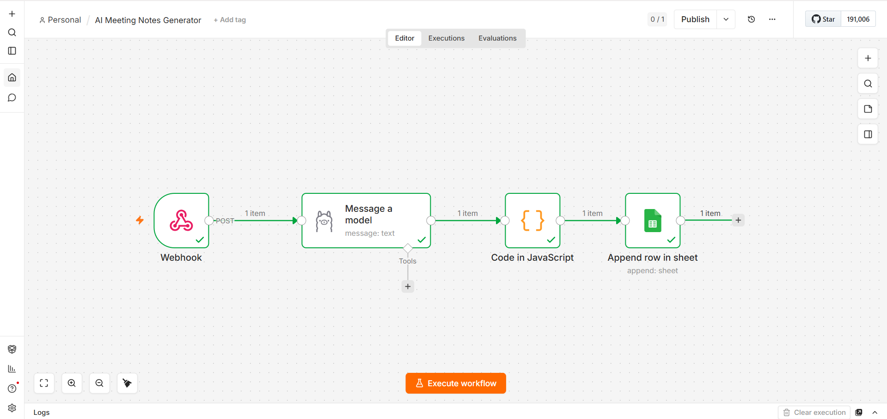

AI Meeting Notes Generator is a privacy-focused automation pipeline
that converts unstructured meeting transcripts into structured notes
using Ollama local LLM.
It extracts summaries, key points, decisions, and action items with
owners and deadlines, then stores the output in Google Sheets through
an n8n workflow.
🏗️ Architecture
Postman / API Client
↓
Webhook Trigger (n8n)
↓
Ollama Local LLM
↓
JavaScript Transformation
↓
Google Sheets Storage

✨ Features
Webhook based meeting transcript input
AI processing using local Ollama LLM
Automatic summary generation
Key points extraction
Decision tracking
Action items with owner and deadline
JavaScript data parsing and formatting
Google Sheets automatic storage
Privacy-first local AI workflow
⚙️ Tech Stack
n8nOllamaJavaScriptGoogle SheetsPostman
📥 Input Format
{
"meeting_text":
"John will finish login page by Friday.
Sarah confirmed API is ready."
}